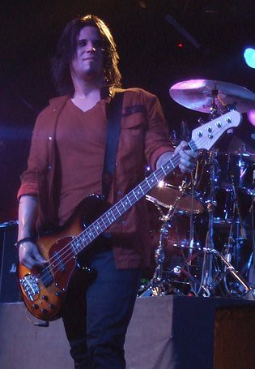

Тобин Эсперанс
Родился в 1979 году в Вакавилле, Калифорния. Его родители развелись, когда ему было всего 6 лет (в 1985 году). Играть Тобин начал в 1988 году, когда отец подарил ему бас-гитару. Играть Тобин научился сам. До группы Papa Roach работал на складе. Женился в 2002 году на девушке по имени Дженнифер. В 2005 развелся. В браке появился ребенок — девочка по имени Ава. В 2010 году Тобин женился второй раз, его нынешнюю супругу зовут Эмбер (Amber). В 2012 году у пары родилась дочь, которую они назвали Эрроу (Arrow). Эмбер (жена Тобина) также воспитывает ребенка от первого брака. Её сыну 15 лет и его зовут Джейден.
На теле Тобина есть 13 татуировок. Одна из них - имя его второй супруги.
У Тобина есть младший брат Энтони — техник Papa Roach.
Тобин пришёл в группу Papa Roach в 1994 году, когда экс-бас-гитарист Уилл Джеймс уехал в летний церковный лагерь.
Помимо игры на бас-гитаре, Тобином написана музыка для большинства песен Papa Roach.